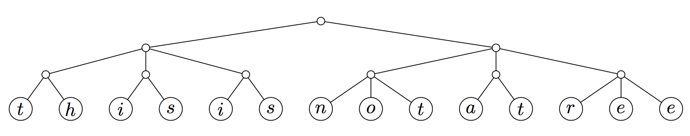
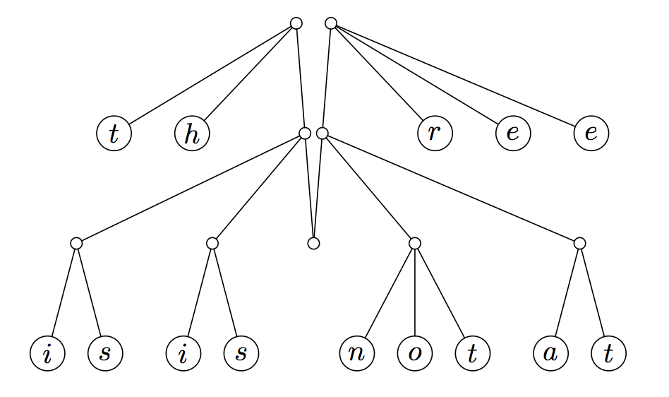
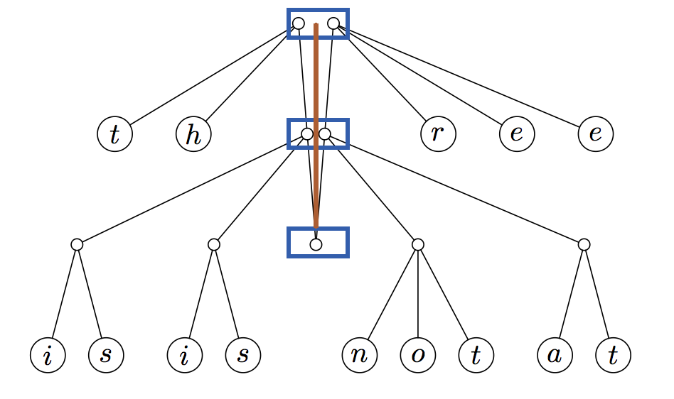

OI Wiki · prijevod · Strukture podatakaOI Wiki · translation · Data structures
Finger treeFinger tree
Sadržaj
Napomena
Ovo je poglavlje izborno štivo; prije čitanja provjerite jeste li donekle upoznati s funkcijskim programiranjem (functional programming).
Uvod
Finger tree (prstno stablo) čisto funkcijska je struktura podataka koju su predložili Ralf Hinze i Ross Paterson.
Zašto nam je potreban finger tree
U funkcijskom programiranju lista je vrlo čest tip podataka. Gotovo svi funkcijski jezici podržavaju operacije nad nizovima kao što su dodavanje i brisanje elemenata na oba kraja (operacije reda s dva kraja, deque), umetanje, spajanje i brisanje na proizvoljnom mjestu, pronalaženje elementa koji zadovoljava uvjet te razdvajanje niza na podnizove. Međutim, učinkovito izvođenje većeg broja operacija tim je jezicima teško postići; čak i kad postoje odgovarajuće implementacije, obično su vrlo složene i u praksi teško upotrebljive.
Finger tree nudi čisto funkcijsku strukturu podataka za nizove koja pristup te dodavanje na početak i kraj niza obavlja u amortiziranom konstantnom vremenu (amortized constant time), a spajanje i slučajni pristup u logaritamskom vremenu (logarithmic time). Osim dobrih asimptotskih granica vremena izvođenja, finger tree je i vrlo fleksibilan: u kombinaciji s monoidnim oznakama (monoidal tag) na elementima, finger tree može se iskoristiti za učinkovitu implementaciju nizova sa slučajnim pristupom, uređenih nizova, intervalnih stabala i prioritetnih redova.
Osnovna struktura
Finger tree podatke pohranjuje na „prstima” (listovima) stabla, s amortiziranim konstantnim vremenom pristupa. Prst (finger) je točka iz koje se može pristupiti dijelu strukture podataka. U imperativnim jezicima (imperative language) to bi se zvalo pokazivač. U finger treeu „prst” je struktura koja pokazuje na krajeve niza ili na listove. Finger tree u svakom unutarnjem čvoru pohranjuje i rezultat primjene neke asocijativne operacije na njegove potomke. Podaci pohranjeni u unutarnjim čvorovima mogu pružiti funkcionalnost koja nadilazi stablaste strukture podataka.
- Dubina finger treea računa se odozdo prema gore.
- Prva razina finger treea, tj. listovi stabla, sadrži samo vrijednosti i ima dubinu \(0\). Druga razina ima dubinu \(1\), treća dubinu \(2\) i tako dalje.
- Što je čvor bliže korijenu, to je dublje podstablo izvornog stabla (stabla prije nego što je postalo finger tree) na koje pokazuje. Tako je spuštanje niz stablo zapravo kretanje od listova prema korijenu, što je suprotno uobičajenim stablastim strukturama podataka. Da bismo dobili takvu strukturu, moramo osigurati da izvorno stablo ima jednoliku dubinu. Pri deklaraciji objekta čvora on mora biti parametriziran tipom svoje djece. Čvorovi na kralježnici dubine \(1\) i veće pokazuju na stabla, a zahvaljujući toj parametrizaciji mogu se prikazati ugniježđenim čvorovima.
Pretvaranje stabla u finger tree
Napomena
2-3 stablo stablasta je struktura podataka u kojoj svaki čvor s djecom (unutarnji čvor) ima ili dvoje djece (\(2\)-čvor) i jedan podatkovni element, ili troje djece (\(3\)-čvor) i dva podatkovna elementa. 2-3 stablo je B-stablo reda \(3\). Vanjski čvorovi stabla (listovi) nemaju djece i sadrže jedan ili dva podatkovna elementa.
Postupak započinjemo s balansiranim 2-3 stablom. Da bi finger tree ispravno radio, svi listovi moraju biti na istoj razini, kao na donjoj slici (slike su preuzete iz rada o finger treeu):

Prst je „struktura koja omogućuje učinkovit pristup čvorovima stabla u blizini određenog položaja”. Da bismo napravili finger tree, prste stavljamo na lijevi i desni kraj stabla: uzmemo krajnji lijevi i krajnji desni unutarnji čvor i podignemo ih, tako da ostatak stabla visi između njih. To nam daje amortizirano konstantno vrijeme pristupa krajevima niza.

Ova nova struktura podataka zove se finger tree. Finger tree sastoji se od nekoliko slojeva (plavi okviri dolje) raspoređenih duž kralježnice stabla (smeđa crta):

data FingerTree a = Empty
| Single a
| Deep (Digit a) (FingerTree (Node a)) (Digit a)
data Digit a = One a | Two a a | Three a a a | Four a a a a
data Node a = Node2 a a | Node3 a a a
Znamenke (digits) u primjeru čvorovi su označeni slovima. Svaka je lista podijeljena prefiksom ili sufiksom svakog čvora na kralježnici. U pretvorenom 2-3 stablu čini se da popis znamenki na najvišoj razini može imati duljinu dva ili tri, dok niže razine imaju duljinu samo jedan ili dva. Da bi neke primjene finger treea mogle raditi tako učinkovito, finger tree dopušta od \(1\) do \(4\) podstabla na svakoj razini. Znamenke finger treea mogu se pretvoriti u listu, npr.:
type Digit a = One a | Two a a | Three a a a | Four a a a a
Najviša razina ima elemente tipa \(a\), sljedeća razina elemente tipa Node \(a\), jer su to čvorovi između kralježnice i listova; općenito to znači da \(n\)-ta razina stabla ima elemente tipa \(Node^{n}\) \(a\), odnosno 2-3 stabla dubine \(n\). To znači da je niz od \(n\) elemenata predstavljen stablom dubine Θ(log n). Element na udaljenosti \(d\) od bližeg kraja pohranjen je u stablu na dubini Θ(log d).
Operacije reda s dva kraja
Finger tree također omogućuje učinkovit red s dva kraja (deque). Bez obzira na to je li struktura perzistentna, sve operacije traju Θ(1). Može se promatrati kao proširenje implicitnog dequea1:
- Zamjena parova 2-3 čvorovima daje dovoljno fleksibilnosti za učinkovito spajanje. (Da bi operacije dequea ostale u konstantnom vremenu, Digit treba proširiti do četiri.)
- Označavanje unutarnjih čvorova monoidom (monoid) omogućuje učinkovito razdvajanje.
data ImplicitDeque a = Empty
| Single a
| Deep (Digit a) (ImplicitDeque (a, a)) (Digit a)
data Digit a = One a | Two a a | Three a a a
Vremenska složenost
Finger tree pruža amortizirani konstantan pristup „prstima” (listovima) stabla, gdje su podaci pohranjeni, te spajanje i razdvajanje u vremenu logaritamskom u veličini manjeg dijela. U svakom unutarnjem čvoru pohranjuje i rezultat primjene neke asocijativne operacije na njegove potomke. Ti „sažeti” podaci pohranjeni u unutarnjim čvorovima mogu pružiti funkcionalnost drugih struktura podataka osim stabala.
| Operacija | Finger tree | Označeno 2-3 stablo (annotated 2-3 tree) | Lista (list) | Vektor (vector) |
|---|---|---|---|---|
cons,snoc |
\(O(1)\) | \(O(\log n)\) | \(O(1)\)/\(O(n)\) | \(O(n)\) |
viewl,viewr |
\(O(1)\) | \(O(\log n)\) | \(O(1)\)/\(O(n)\) | \(O(1)\) |
measure/length |
\(O(1)\) | \(O(1)\) | \(O(n)\) | \(O(1)\) |
append |
\(O(\log \min(l1, l2))\) | \(O(\log n)\) | \(O(n)\) | \(O(m+n)\) |
split |
\(O(\log \min(n, l-n))\) | \(O(\log n)\) | \(O(n)\) | \(O(1)\) |
replicate |
\(O(\log n)\) | \(O(\log n)\) | \(O(n)\) | \(O(n)\) |
fromList,toList,reverse |
\(O(l)\)/\(O(l)\)/\(O(l)\) | \(O(l)\) | \(O(1)\)/\(O(1)\)/\(O(n)\) | \(O(n)\) |
index |
\(O(\log \min(n, l-n))\) | \(O(\log n)\) | \(O(n)\) | \(O(1)\) |
Primjene
Finger tree može se iskoristiti za izgradnju drugih stabala. Primjerice, prioritetni red može se ostvariti tako da se unutarnji čvorovi označe najmanjim prioritetom među djecom, a indeksirana lista/niz tako da se čvorovi označe brojem listova među njihovom djecom. Druge primjene uključuju nizove sa slučajnim pristupom (opisane dolje), uređene nizove i intervalna stabla.
Finger tree omogućuje prosječno \(O(1)\) za push, reverse i pop, \(O(\log n)\) za dodavanje i razdvajanje, a može se prilagoditi indeksiranim ili sortiranim nizovima. Kao i sve funkcijske strukture podataka, u svojoj je biti perzistentan; to znači da se stare inačice stabla uvijek čuvaju.
Što se tiče implementacija, konačni nizovi Seq u osnovnoj biblioteci Haskella implementirani su 2-3 finger treeom (Data.Sequence), a implementacija modula BatFingerTree u OCamlu također koristi općenitu strukturu finger tree. Finger tree može se implementirati s lijenom evaluacijom ili bez nje, no lijenost omogućuje jednostavniju implementaciju.
Literatura i dodatno štivo
- Ralf Hinze and Ross Paterson, "Finger trees: a simple general-purpose data structure", Journal of Functional Programming 16:2 (2006) pp 197-217.
- Finger Tree - Wikipedia
-
Purely Functional Data Structures, Chris Okasaki (1999) ↩
Contents
Note
This chapter is optional reading; before reading it, make sure you are somewhat familiar with functional programming.
Introduction
The finger tree is a purely functional data structure proposed by Ralf Hinze and Ross Paterson.
Why we need finger trees
In functional programming, the list is a very common data type. Almost all functional languages support sequence operations such as adding and removing elements at both ends (double-ended queue operations), insertion, concatenation and deletion at arbitrary positions, finding an element that satisfies a condition, and splitting a sequence into subsequences. However, these languages find it hard to perform many operations efficiently; even when corresponding implementations exist, they are usually very complex and hard to use in practice.
The finger tree provides a purely functional sequence data structure that supports access to and insertion at the front and the back of the sequence in amortized constant time, and concatenation and random access in logarithmic time. Besides good asymptotic running-time bounds, the finger tree is also very flexible: combined with monoidal tags on the elements, the finger tree can be used to implement efficient random-access sequences, ordered sequences, interval trees and priority queues.
Basic structure
A finger tree stores its data at the "fingers" (leaves) of the tree, with amortized constant access time. A finger is a point from which part of the data structure can be accessed. In an imperative language it would be called a pointer. In a finger tree, a "finger" is a structure pointing to the ends of the sequence or to the leaves. The finger tree also stores, in every internal node, the result of applying some associative operation to its descendants. The data stored in the internal nodes can provide functionality beyond that of tree data structures.
- The depth of a finger tree is counted from the bottom up.
- The first level of the finger tree, i.e. the leaves of the tree, contains only values and has depth \(0\). The second level has depth \(1\), the third level has depth \(2\), and so on.
- The closer a node is to the root, the deeper the subtree of the original tree (the tree before it became a finger tree) that it points to. Thus, walking down the tree is actually a walk from the leaves to the root, which is the opposite of usual tree data structures. To obtain this structure we must make sure the original tree has uniform depth. When declaring a node object, it must be parameterized by the type of its children. Spine nodes of depth \(1\) and more point to trees, and thanks to this parameterization they can be represented by nested nodes.
Converting a tree into a finger tree
Note
A 2-3 tree is a tree data structure in which every node with children (internal node) has either two children (\(2\)-node) and one data element, or three children (\(3\)-node) and two data elements. A 2-3 tree is a B-tree of order \(3\). The external nodes of the tree (leaves) have no children and contain one or two data elements.
We start the process with a balanced 2-3 tree. For a finger tree to work properly, all leaves must be on the same level, as in the figure below (the figures are taken from the finger tree paper):
A finger is "a structure that provides efficient access to tree nodes near a given position". To make a finger tree, we put fingers at the left and right ends of the tree: we take the leftmost and rightmost internal nodes and lift them up, so that the rest of the tree hangs between them. This gives amortized constant-time access to the ends of the sequence.
This new data structure is called a finger tree. A finger tree consists of several layers (the blue boxes below) arranged along the spine of the tree (the brown line):
data FingerTree a = Empty
| Single a
| Deep (Digit a) (FingerTree (Node a)) (Digit a)
data Digit a = One a | Two a a | Three a a a | Four a a a a
data Node a = Node2 a a | Node3 a a a
The digits in the example are the nodes labeled with letters. Each list is split by the prefix or suffix of each spine node. In the converted 2-3 tree it seems that the list of digits at the top level can have length two or three, while lower levels only have length one or two. For some applications of finger trees to run so efficiently, the finger tree allows from \(1\) to \(4\) subtrees at each level. The digits of a finger tree can be converted into a list, e.g.:
type Digit a = One a | Two a a | Three a a a | Four a a a a
The top level has elements of type \(a\), the next level has elements of type Node \(a\), because these are the nodes between the spine and the leaves; in general, this means the \(n\)-th level of the tree has elements of type \(Node^{n}\) \(a\), i.e. 2-3 trees of depth \(n\). This means that a sequence of \(n\) elements is represented by a tree of depth Θ(log n). An element at distance \(d\) from the nearer end is stored in the tree at depth Θ(log d).
Double-ended queue operations
The finger tree also provides an efficient double-ended queue (deque). Whether or not the structure is persistent, all operations take Θ(1). It can be seen as an extension of the implicit deque1:
- Replacing pairs with 2-3 nodes gives enough flexibility for efficient concatenation. (To keep deque operations in constant time, Digit needs to be extended to four.)
- Labeling the internal nodes with a monoid enables efficient splitting.
data ImplicitDeque a = Empty
| Single a
| Deep (Digit a) (ImplicitDeque (a, a)) (Digit a)
data Digit a = One a | Two a a | Three a a a
Time complexity
The finger tree provides amortized constant-time access to the "fingers" (leaves) of the tree, where the data is stored, and concatenation and splitting in time logarithmic in the size of the smaller part. It also stores, in each internal node, the result of applying some associative operation to its descendants. This "summary" data stored in the internal nodes can provide the functionality of data structures other than trees.
| Operation | Finger tree | Annotated 2-3 tree | List | Vector |
|---|---|---|---|---|
cons,snoc |
\(O(1)\) | \(O(\log n)\) | \(O(1)\)/\(O(n)\) | \(O(n)\) |
viewl,viewr |
\(O(1)\) | \(O(\log n)\) | \(O(1)\)/\(O(n)\) | \(O(1)\) |
measure/length |
\(O(1)\) | \(O(1)\) | \(O(n)\) | \(O(1)\) |
append |
\(O(\log \min(l1, l2))\) | \(O(\log n)\) | \(O(n)\) | \(O(m+n)\) |
split |
\(O(\log \min(n, l-n))\) | \(O(\log n)\) | \(O(n)\) | \(O(1)\) |
replicate |
\(O(\log n)\) | \(O(\log n)\) | \(O(n)\) | \(O(n)\) |
fromList,toList,reverse |
\(O(l)\)/\(O(l)\)/\(O(l)\) | \(O(l)\) | \(O(1)\)/\(O(1)\)/\(O(n)\) | \(O(n)\) |
index |
\(O(\log \min(n, l-n))\) | \(O(\log n)\) | \(O(n)\) | \(O(1)\) |
Applications
Finger trees can be used to build other trees. For example, a priority queue can be obtained by labeling the internal nodes with the minimum priority among their children, and an indexed list/array by labeling the nodes with the number of leaves among their children. Other applications include random-access sequences (described below), ordered sequences and interval trees.
The finger tree offers \(O(1)\) on average for push, reverse and pop, \(O(\log n)\) for append and split, and can be adapted to indexed or sorted sequences. Like all functional data structures, it is inherently persistent; this means that old versions of the tree are always kept.
As for implementations, the finite sequences Seq in the Haskell core library are implemented with a 2-3 finger tree (Data.Sequence), and the implementation of the BatFingerTree module in OCaml also uses a generic finger tree structure. Finger trees can be implemented with or without lazy evaluation, but laziness allows a simpler implementation.
References and further reading
- Ralf Hinze and Ross Paterson, "Finger trees: a simple general-purpose data structure", Journal of Functional Programming 16:2 (2006) pp 197-217.
- Finger Tree - Wikipedia
-
Purely Functional Data Structures, Chris Okasaki (1999) ↩